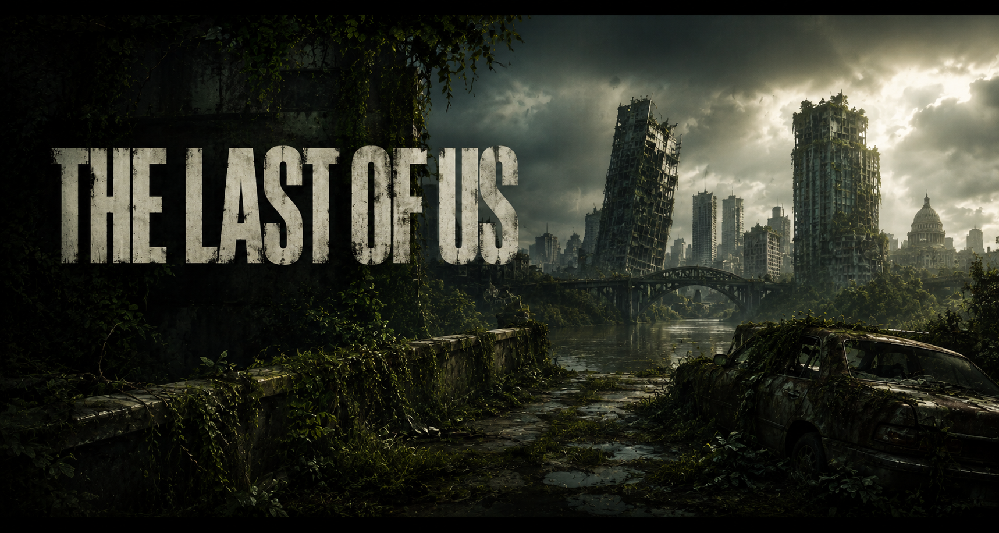
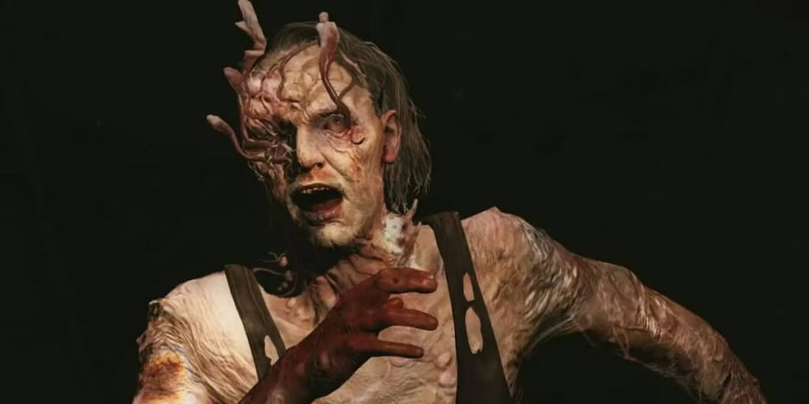
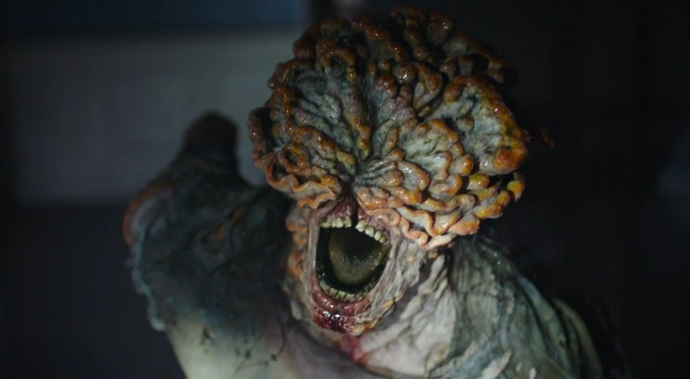
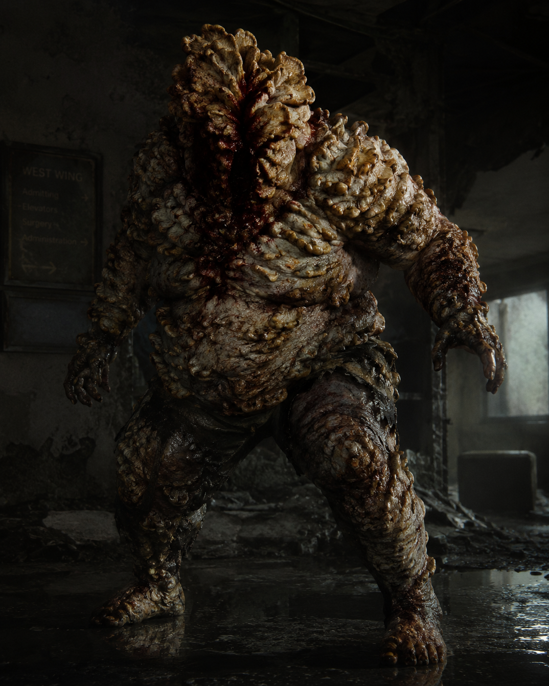
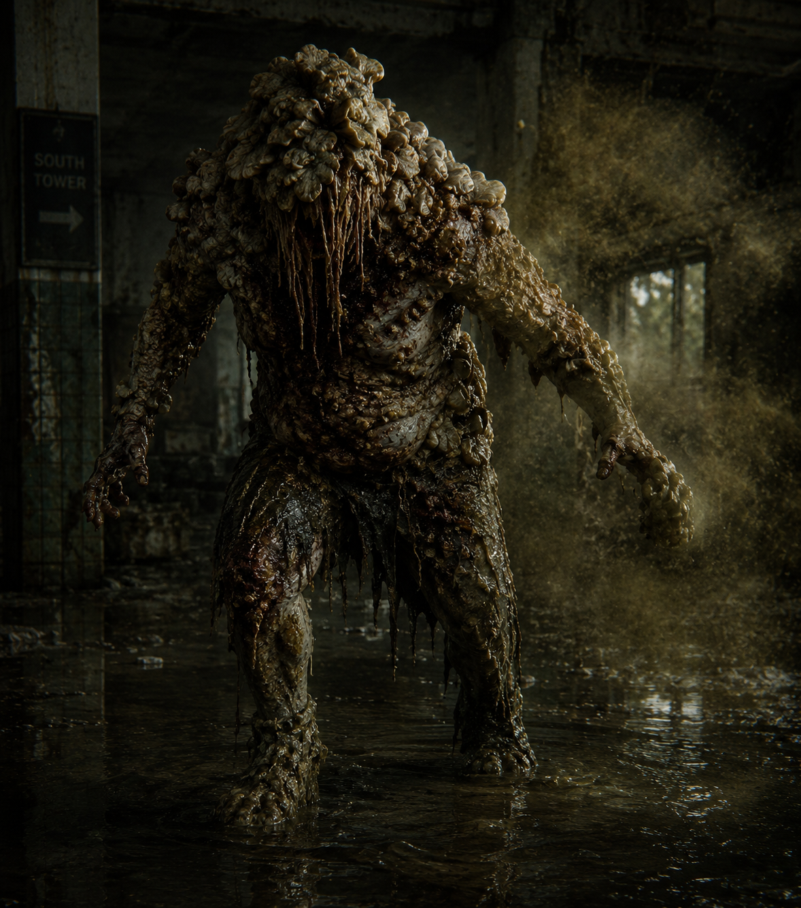
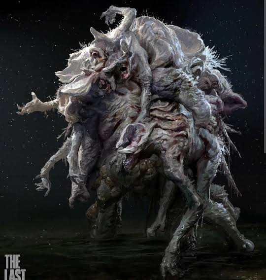
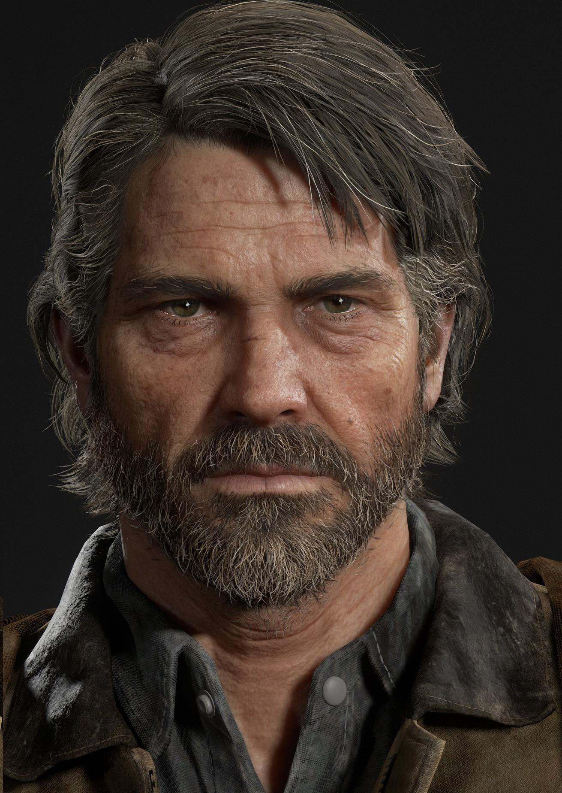
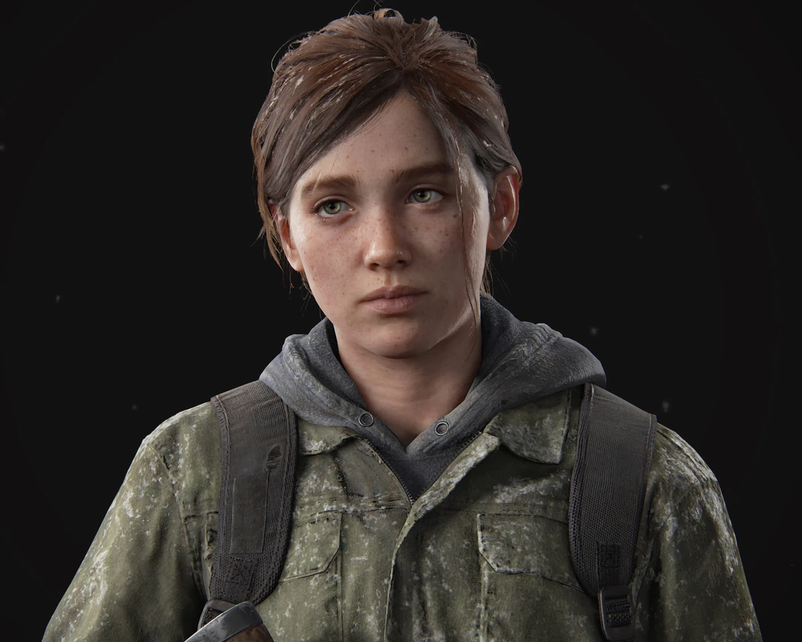

Corredor
Infectados rápidos e agressivos
que ainda mantêm características humanas reconhecíveis.

Infectados rápidos e agressivos
que ainda mantêm características humanas reconhecíveis.

Infectados que se escondem e atacam de surpresa
tornando ambientes fechados especialmente perigosos.

Reconhecidos pelas formações de fungos na cabeça
e pelos sons usados para localizar pessoas.

Infectados enormes e resistentes
com placas de fungos que protegem o corpo.

Criaturas que liberam nuvens de esporos,
e são encontradas em determinados ambientes.

Uma criatura excepcional formada pela união de vários infectados,
encontrada em uma área hospitalar.

Um sobrevivente experiente que perdeu muito após o início do surto.
Sua jornada muda quando recebe a missão de proteger Ellie.

Uma jovem corajosa e determinada que possui imunidade à infecção pelo fungo Cordyceps.
Sua história é marcada por desafios e descobertas.

Uma integrante da WLF, marcada por acontecimentos do passado.
Sua trajetória apresenta outro lado dos conflitos desse mundo.